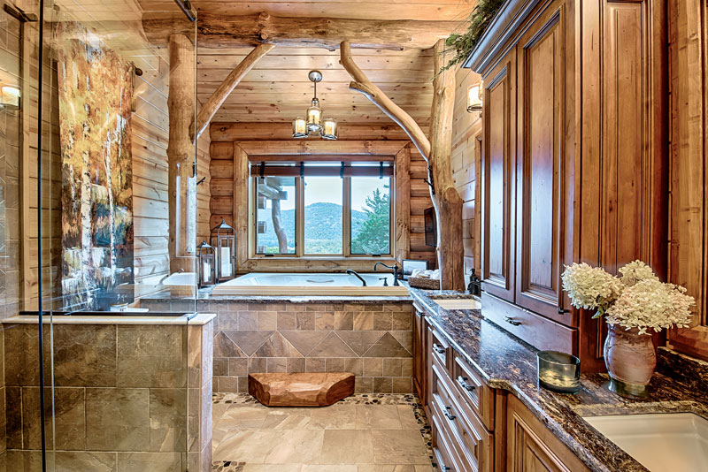
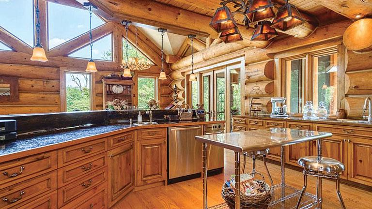
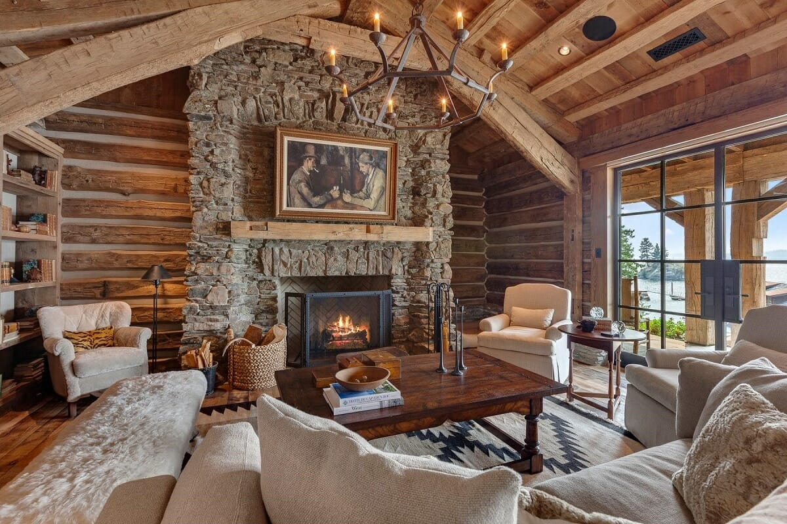

Erdei Álom
„Minden faház egy kis menedék a világ zajától.”
A faházról:
- Alapterület: kb. 35–70 m²
- Férőhely: 2–6 fő
- Szobák száma: 1–3 helyiség
- 1 db franciaágy (160×200 cm) a hálóban
- 1 db kihúzható kanapé vagy emeletes ágy a nappaliban/gyerekszobában
- Igény szerint pótágy kérhető
- 1 db zuhanyzós fürdőszoba, mosdókagylóval
- 1 db zárt WC
- Törölközők, WC-papír, alap tisztálkodószerek biztosítva
- Melegvíz bojlerrel vagy központi rendszerrel
- Hajszárító és sminktükör
Képek az "Erdei Álom" faházról


